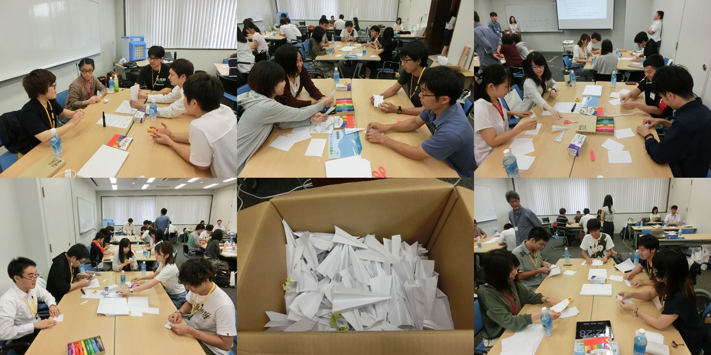

enPiT
アジャイルチームキャンプ
平成29年度 AIIT enPiT 夏合宿
1st Day

紙飛行機のワークショップルール
・紙飛行機を作成する
・A4コピー用紙の1/4で作成する
・3m飛ばすことで成功と判定する
・成功した数がスコアになる
・1人で複数回連続で折ってはいけない
・紙飛行機の先は尖っている
・前回の仕掛品は使用してはならない
・失敗した紙飛行機は,もう一度利用できない
・1スプリント毎に紙飛行機を回収する
流れ
1.紙飛行機ワークの説明を受ける 2.各チームで計画，見積もりを立てる
3.全体で見積もり数の発表
4.チームでスプリント実行，紙飛行機を作って飛ばす
5.全体で飛んだ結果の数を発表
6.各チームで振り返り
2~6を4スプリント繰り返す
今回のワークで得られた各グループの知見は
・失敗と原因の相談
・時間の区切りが短い方がいい
・常に工夫する
・意見を出し合う
・良いシナリオだけを考え、リスクは無視していた
・適材適所大事
・失敗に対する改善はみんなで考える
・作業しながら意思疎通重要
・席の配置／作業環境って大事
・作業イメージの共有
・仕様はチームの事情でなく最善を尽くす
・どんなチームでも繰り返すと改善していく